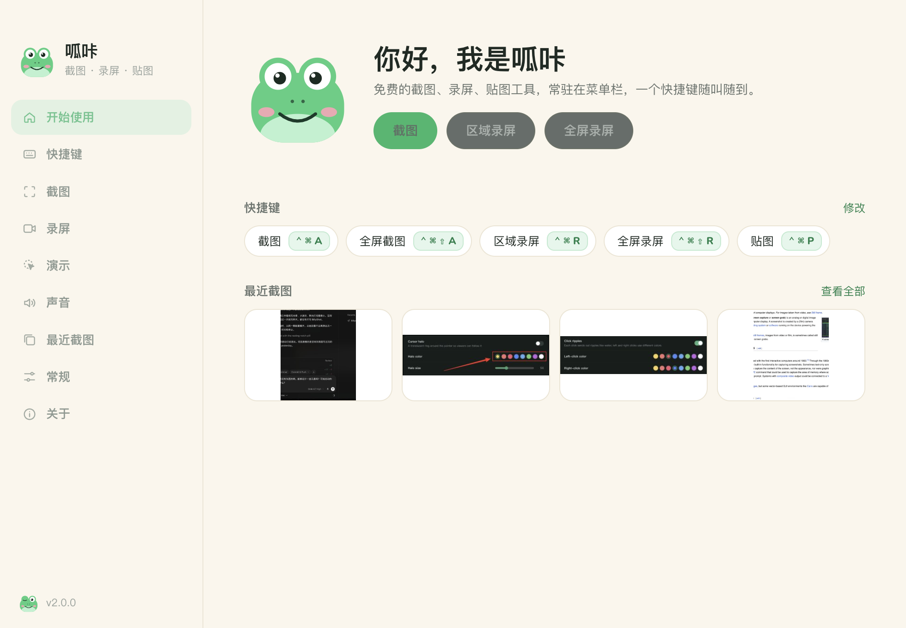

截图标注、录屏 / GIF、贴图、演示光圈，常驻在菜单栏。免费、无广告、无账号、不上传任何内容。

区域 / 窗口 / 全屏，原生分辨率。矩形、箭头、画笔、荧光笔、马赛克、文字、序号，可撤销、可拖动修改。
区域或全屏，MP4（H.264）或 GIF，最高 4K 60 fps，系统声音 + 麦克风，可暂停。
把截图钉在屏幕最上层，缩放、拖动、复制，做对照和抄数字再也不用切窗口。
鼠标光圈、点击波纹、聚光灯、摄像头画中画——录屏和会议共享里都看得到。
把图片、录屏、PDF 拖到菜单栏图标上：转格式、压缩、改尺寸、剪头尾、转 GIF、合成 PDF，全在本机处理。
常驻菜单栏 / 托盘，键盘和鼠标（中键、侧键）快捷键都能自定义，中英文界面跟随系统。
没有账号，没有云端，不上传任何内容。唯一的联网是每天问一次 GitHub 有没有新版本，可以关掉。
从下载文件夹直接打开会让系统授权对不上，呱咔会提醒你搬过去。
截图和录屏都需要。呱咔会弹出权限助手，一步步带你在系统设置里打开开关，开了自动检测。
macOS 的硬要求：权限只给重新打开后的进程。助手里有「重新打开」按钮，之后就不用再管了。
当前版本还没有 Apple 公证。打开 系统设置 → 隐私与安全性，拉到最下面点「仍要打开」；或者在终端运行 xattr -cr /Applications/Hopsnap.app 再打开。公证版本上线后这一步会消失。
点「更多信息」→「仍要运行」。安装包没有购买代码签名证书，SmartScreen 会对新软件这样提示；可以在 GitHub Releases 核对 SHA256。
在。2.0 第一次启动会自动把 BillyShot 的设置和截图历史搬过来，原来的文件夹不动，保存位置也保持原样。
MIT 协议，源码在 GitHub。欢迎提 issue。